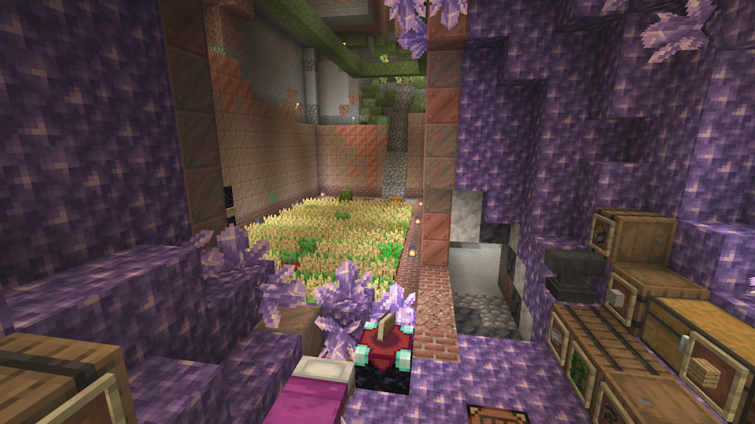

Walkthrough
Table of Contents
1 Primary goal: Beating the Ender Dragon1.1 Getting Wood and Food
1.2 Sustainability
1.3 The Nether
1.4 Finding a Stronghold
2 Mining Tips
3 Getting Enchantments
4 Making a Village
Primary goal: Beating the Ender Dragon
Players who have dabbled in the speedrunning community will know that the end point of any Minecraft challenge run is defeating the Ender Dragon. This is a multi-step process, requiring the player to first gather basic materials, then go to the Nether and gather Blaze Rods and Ender Pearls, craft Eyes of Ender, use the Eyes to locate a Stronghold, open the End Portal in the Stronghold using the Eyes of Ender, enter the portal, then kill the Dragon.
Getting Wood and Food
To truly get started in Minecraft, the player needs to obtain wood, and they also need food in order to not die. Unfortunately, both of these resources are scarce underground.
Getting started in this challenge can thus be very difficult and time-consuming. There are two primary sources of wood in the underground: Lush Caves, and Abandoned Mineshafts. It isn't possible to craft tools without wood, so the first phase of this challenge consists of slowly digging through stone with no tools; that is, unless you decide to skip this step.
There are at least four ways of modifying the rules in order to ensure you get wood fairly quickly. See Rules/For Impatient Players. When I did a practice run of this challenge while writing this guide, I skipped this step by using a set seed with Lush Caves close to spawn.
Fortunately, both the primary sources of wood also provide access to renewable food in the form of Glow Berries. But even before finding wood, there are already a small number of food options. Killing Zombies, Zombie villagers, and Drowned gets you Rotten Flesh, and killing Spiders, Cave Spiders, and Witches gets you Spider Eyes. Both of these items are edible, though both come with a severe drawback: Rotten Flesh gives you the Hunger effect 80% of the time, which causes your hunger bar to drain more quickly than normal, and Spider Eyes give you Poison 100% of the time. The duration of Poison from Spider Eyes normally does four damage (2 hearts), but since Poison will not take the player below 1 health, this damage can be avoided by eating Spider Eyes on low health.
Food can also be found in the various structures that are found underground. Bread can be found in Mineshafts, Strongholds, and Monster Rooms, Wheat (which can be crafted into Bread) can be found in Monster Rooms and Igloo basements, and Apples can be found in Strongholds and Igloo basements. These three food sources aren't renewable when obtained in this way, but they will help the player a little bit. Seeds can't be used to farm food without a Hoe.
Zombies and Zombie Villagers also have a chance of dropping a Carrot or Potato when killed, although the chance is low, so until one is able to grow more Carrots or Potatoes this is not a reliable food source.
Sustainability
After collecting a basic amount of wood and making tools, the second major hurdle in this challenge is to set up farms for sustainable access to both wood and food.
Make a composter. If you have extras of most plants, you can put them into the Composter to get back a small amount of Bone Meal. More importantly, if you compost Moss Blocks, you get more Bone Meal back than it took to grow the Moss in the first place.
For food, the options are Wheat, Carrots, Potatoes, Beetroot, Mushroom Stew, and Melons. For all of these except for Mushroom Stew, to farm them you need Dirt, a Hoe, a light source, and a seed for the appropriate crop (Carrots and Potatoes are their own seed), and water access is recommended. Place the dirt down (near water if possible), till it with the hoe, and place the seed on top. Crops will uproot if not adequately lit; the required light level is 7. If there isn't water, the dirt will stop being tilled if there is nothing planted on it. Water hydrates farmland up to 4 blocks away, including diagonally.
Melons require a second block of dirt and are harvested by breaking the melon block; the others are harvested by breaking them when they are fully grown. Breaking a crop prematurely will reset its growth; this applies to melon stems as well. Wheat is fully grown when the entire plant turns yellow, and carrots, potatoes, and beetroots are fully grown when the tops of the vegetable are easily visible.
A tip: Crops grow significantly faster when they are planted in rows of the same crop type, with either another crop or tilled dirt with nothing planted on it in between.
Mushroom Stew is a bit of an oddball with respect to farming. In order to make Mushroom Stew, you need both Red and Brown Mushrooms, and a wooden bowl. When placed down, Mushrooms will gradually cause more Mushrooms of the same color to grow near them. This method is slow, though. A faster way of farming Mushrooms is to plant them on Dirt with a large (at least 7x7x7) area around it, then use Bone Meal on the mushroom. This will grow a huge mushroom, and breaking the cap blocks will most likely give you multiple small mushrooms.
For renewable Wood, you have two options: azalea wood (found in Lush Caves) and Bamboo (found occasionally by fishing in Jungles). Azalea wood is fairly simple to farm; bone mealing an Azalea bush with adequate space above it causes it to grow into an Azalea tree. This tree can then be chopped down like any normal Minecraft tree. It should be noted that unlike saplings from trees on the surface, Azalea bushes will not grow by themselves; you have to use Bone Meal on them. A source of Bone Meal is thus essential. Good sources are Moss farming (which you have access to if you have Azalea wood) and Bones from Skeletons.
Bamboo can be planted on Dirt, and it grows quite tall. It can be crafted into Sticks and Planks, but can't be smelted into Charcoal, unlike other wood types. Sticks can be crafted using two Bamboo items without need for a Crafting Table, but Planks require first crafting nine Bamboo items in a 3x3 pattern to make a Block of Bamboo. This requires a Crafting table, which itself is made of planks, so you can't make recipes that use planks from Bamboo until you've found some other wood source (which does not have to be renewable).
The Nether
Once you have gotten settled in, the next major hurdle is accessing the Nether. The standard way of building a Nether Portal is to mine Obsidian with a Diamond pickaxe, build the frame, and light it with a Flint and Steel. The frame must have a minimum exterior width of 4 and a minimum exterior height of 5, but the corners need not be Obsidian, so 10 blocks of Obsidian are needed. If you're having trouble finding Diamonds, though, or you just want to complete the challenge as quickly as possible, you can build a Nether Portal frame with only a Bucket by creating the Obsidian in place. The speedrun method is to set up a waterfall near a lava lake and pour buckets of lava inside the waterfall, but you can also just place lava and then place water on top of or next to it before it spreads too far. The lava sources need not come from a pool of lava; you can also collect 10 of the lava springs that generate in the walls of caves.
If you somehow can't find Flint or enough Iron, there is also an alternative to lighting the portal with Flint and Steel. By placing flammable blocks such as Wood next to the frame and Lava under the flammable blocks, it is possible to get fire inside the frame, which will light the portal. This is the Skyblock method.
Once you have a working portal, simply enter the Nether. Surviving in the Nether is no different in this challenge compared to the normal game, and the resources that you need to collect are the same as in the normal game.
Finding a Stronghold
As in the normal game, you need Eyes of Ender to locate a Stronghold and repair the End Portal. Eyes of Ender are crafted from Ender Pearls and Blaze Powder, and the latter is crafted from Blaze Rods. For Blaze Rods, you have no choice but to kill Blazes in a Nether Fortress, but there are three different sources of Ender Pearls: Piglins, Villagers, and Endermen. All three sources of Ender Pearls are fairly well balanced. Getting them from Villagers requires finding and curing a Zombie Villager, then assigning it a profession of Cleric and levelling it up a bunch. Getting Ender Pearls from Piglins requires trading them gold, and a lot more is needed compared to what you've probably seen in speedruns, since Piglin bartering was nerfed in 1.16.1. Endermen are more reliable than Piglins, but you need to find and kill a large number of them. The Nether's Warped Forest is a good place to hunt Endermen, as no other mobs will spawn there.
I recommend getting more Eyes of Ender than you would normally, since it is likely that you'll lose a few while locating the stronghold.
Using Eyes of Ender underground is a pain in the backside, as if they go into a wall or the ceiling, the item goes up to the surface, ensuring you lose the Eye. This can be avoided by throwing the Eye in a large open space such as a "cheese cave" (the huge open ones with pillars), but conserving Eyes by using a parallax method is recommended.
In Java Edition, the parallax method can be done very precisely. Throw an Eye of Ender, look directly at it as it floats away, then without turning open the F3 screen and write down your X and Z coordinates and your horizontal angle. Then repeat this process a few hundred blocks away, preferably in a direction perpendicular to the angle the Eye flew in. You can use this tool to calculate the position of the stronghold based on these values. The predicted location will be more accurate the farther apart the throwing locations are, assuming the Eyes at both locations are tracking the same Stronghold. It will also be more accurate the closer both throwing locations are to the actual stronghold.
In Bedrock Edition, since there is no way of accurately measuring the angle at which you are facing, the parallax method isn't as precise, but it can still be performed. One way is to compare the location an Eye lands after dropping to the location it was thrown. Use the equation (Z_stronghold - Z_thrown) / (X_stronghold - X_thrown) = (Z_landed - Z_thrown) / (X_landed - X_thrown), plug in the values, and repeat for the other location to get a system of two linear equations in Z_stronghold and X_stronghold. Since we don't have the exact angle the Eye flew in, this method is less accurate than what is possible in Java Edition.
After using the parallax method, go to the predicted location of the stronghold. If you are sufficiently close, a thrown Eye of Ender should fly close to straight up or straight down. If not, you can get a more accurate position by replacing the farther away measuring point with this one and redoing the math. Once you are within a few blocks of the stronghold, dig straight up and straight down to look for it. The stronghold can be at any depth below sea level. You can dig straight down safely by digging a 2-block wide hole and standing in the center of the two blocks. If there is a lava lake or giant cave below you, you can safely descend by dropping gravel until it stacks up to the same level as your feet, although in this situation I would instead recommend checking above you for the stronghold if you haven't yet.
Once you've found the Stronghold, finding the portal room, fixing the portal, going to the End, and killing the dragon are the same as in the normal game. I don't recommend using the bed method to kill the dragon unless you are confident in your ability to pull it off consistently.
Mining Tips
Learning the correct depth to mine each ore at is important; otherwise, you may find none of the ore you are looking for. Each ore has a specific height range it generates in, and one or more optimal heights to find it More details can be found in Materials, but a visualization is provided below. Note that all 8 ores can be found between Y:0 and Y:16, and said range is near the peak for iron.
Deepslate, found below Y:8, is a pain to mine through, since it takes much longer to mine than stone. If branch mining, it is therefore better to mine above deepslate level, unless you are specifically mining for Gold, Redstone, or Diamond, which have their peaks below Y:0. For mining below deepslate level, alternative mining methods such as Moss farming and caving may be preferable to branch mining.
Some ores have "reduced air exposure", which means some of the ore blocks won't generate if next to air. This specifically serves to decrease the amount of ore you get by caving. By using techniques such as branch mining for these ores, you will get more ore each time you find them. Searching flooded caves also bypasses reduced air exposure and lets you get the full amount of ore, since water is not air.

Getting Enchantments
With Books being rare, an Enchanting setup is hard to build in this challenge. Either you can grind for Books by fishing, or by exploring and looting structures. Most books from structures come with Enchantments already on them, but the enchantments can be removed using a Grindstone to get regular books that can be used for crafting. A full enchantment table setup requires one Enchanting Table and 15 Bookshelves, for a grand total of 45 books.
You can use the Enchanting Table without bookshelves as well; the available enchants just won't be as good. When you reach a Stronghold, you can steal the bookshelves from one of the libraries to use in your enchanting setup if you haven't completed it yet.
Enchantments can be applied to tools and armor from Enchanted Books at an anvil. If you have Villager librarians, they can enchant books with predefined enchantments for a cost in Emeralds.
Making a Village
So you want Villagers? You're in for a long ride. To get a Villager, you need to cure a Zombie Villager with a Golden Apple, and you need to do that twice if you want more than one.
Zombie Villagers are rare; they make up 5% of Zombie spawns. The only way to increase your chance of finding one is to build a mob farm that stores Zombies and kills all other mobs, or in Bedrock Edition, to farm a Zombie spawner. This copper farm takes the output from a regular mob farm and sorts out Zombies &emdash; although, since Zombie Villagers are taller than normal Zombies, it may be the case that they are sorted with the Skeletons; I haven't tested this sorter for the purpose of getting Zombie Villagers.
Golden Apples are an uncommon item underground. While they can be crafted using eight Gold Ingots and an Apple, both Apples and Golden Apples can only be found underground from structure chests. Apples are found in Strongholds and Igloo basements, Golden Apples are found in Mineshafts, Strongholds, Ruined Portals, Monster Rooms, Igloo basements, and Desert Pyramid basements. Enchanted Golden Apples are found in Mineshafts, Ancient Cities, Ruined Portals, Monster Rooms, and Desert Pyramid basements, and they can also be used to cure Zombie Villagers, they're just rarer. Enchanted Golden Apples are a very powerful healing item, though, so using a normal Golden Apple for curing Villagers is recommended.
The third ingredient for curing Villagers is a Splash Potion of Weakness. You can make these yourself by brewing a Fermented Spider Eye and Gunpowder into a Water Bottle, but you need Sugar, which is obtained by killing Witches. And Witches are just as rare as Zombie Villagers. Fortunately, we have an easier option here. By capturing a live Witch, we can get the Witch to splash the Zombie Villager with a Splash Potion of Weakness, then give the Zombie Villager the Golden Apple. Fortunately, since as undead mobs Zombie Villagers are immune to Poison and healed by Harming Potions, the Witch can't kill the Zombie Villager. The Witch can kill the Villager once it's cured, though, so it is recommended to, once the curing process has begun, either kill the Witch or seal it up so it stops throwing potions.
After giving a weakened Zombie Villager a Golden Apple, it gains the Strength effect and starts shaking. It takes a while for the Zombie Villager to become a normal Villager. Placing Iron Bars and Beds nearby can help speed up the process.
Fortunately, once you have two Villagers, getting more isn't difficult. Assuming they have enough food, Villagers will breed until there are as many of them as there are beds, all by themselves. And farmer Villagers can also harvest and replant crops such as Wheat by themselves. So breeding more villagers is not hard once you have two (though it may take a while)
For specific types of Villagers, you need to craft and place down a workstation block. Here is a list of workstations for each Villager profession:
- Farmer: Composter
- Fisher: Barrel
- Shepherd: Loom
- Butcher: Smoker
- Leatherworker: Cauldron
- Tool Smith: Smithing Table
- Weapon Smith: Grindstone
- Armorer: Blast Furnace
- Fletcher: Fletching Table
- Mason: Stonecutter
- Librarian: Lectern
Note: Lectern requires three Books to craft - Cartographer: Cartography Table
Note: Cartography Table requires two Paper to craft - Cleric: Brewing Stand
Note: Brewing Stand requires one Blaze Rod to craft, so you need to have visited the Nether before you can craft it